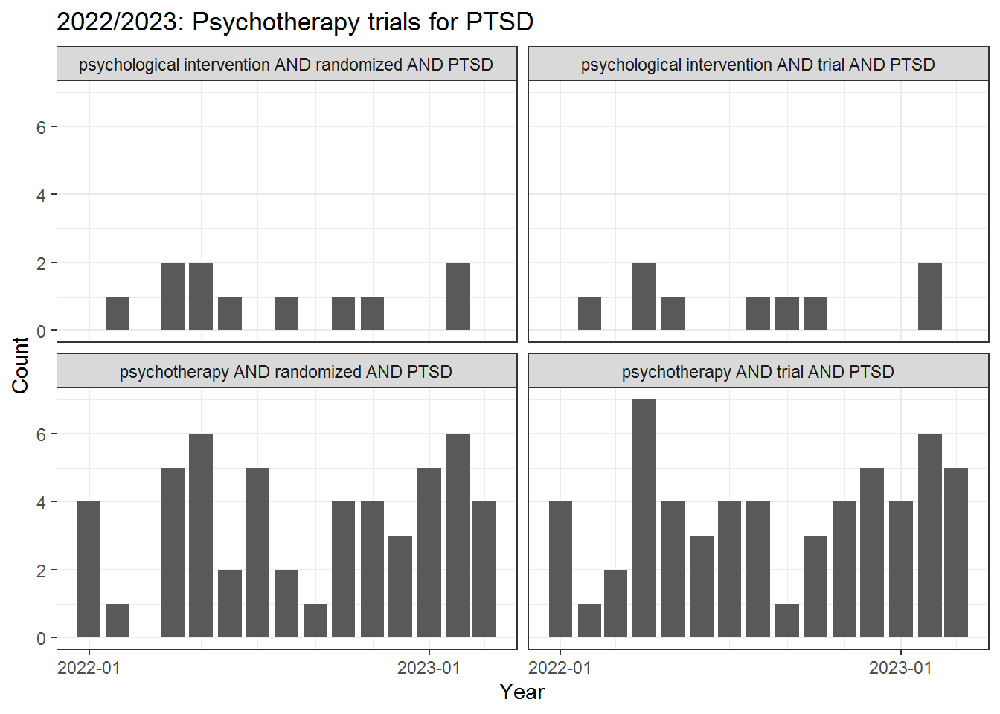
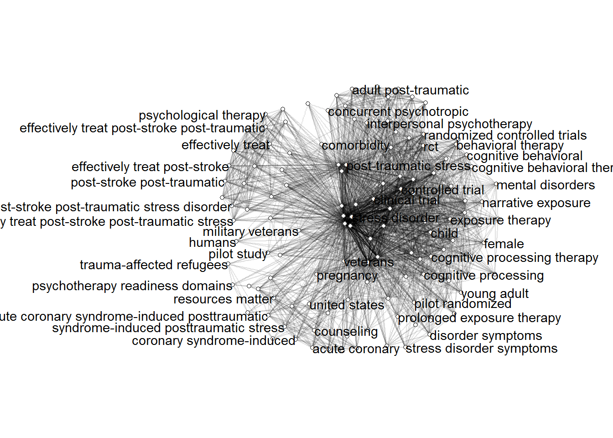
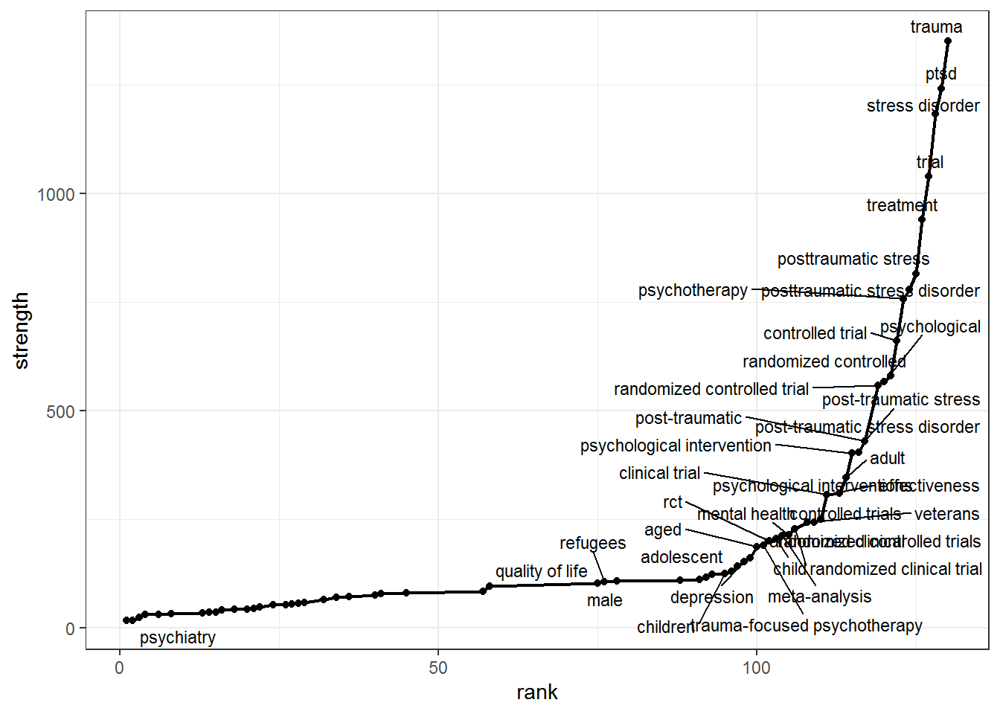
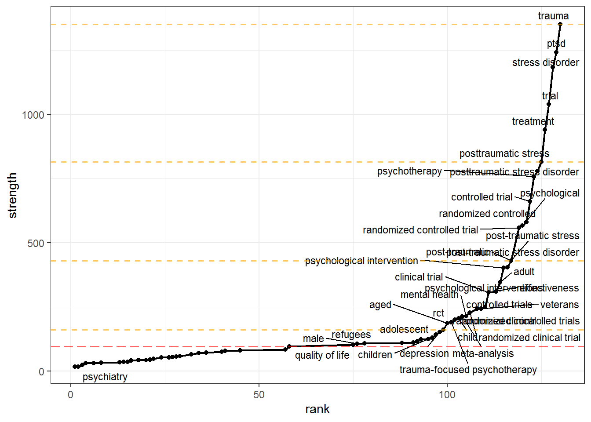

0.0.1 Introduction
You would like to do a systematic search of the scientific literature on a given topic. But a wild caveat appears - your familiarity (or lack there of) with the topic will bias your search, while your field lacks in standardized terminology and is fragmented into multiple nomenclature clusters.
Grames et al. (2019) devised a method to address this (you can read the article here). A gentle introduction to both R and litsearchr package that trivializes the analyses can be found on Library Carpentry.
Simply put we can cast a wide net using a naïve search, retrieve relevant information from data bases (e.g., titles, keywords, abstracts) and analyse this interlinked text data to derive a systematic search strategy. I view it as way to bootstrap knowledge.

We will use the following packages:
easyPubMedthat simplifies the use of the PubMed API to query and extract article data.litsearchrfor automated approach to identifying search terms for systematic reviews using keyword co-occurrence networks.stopwordsfor the Stopwords ISO Dataset which is the most comprehensive collection of stopwords for multiple languages.igraphfor network analyses (this package is already a dependence oflitsearchrbut there are still many useful functions that are not wrapped bylitsearchrfunctions).ggplot2,ggraph, andggrepelfor plotting.
0.0.1.1 1. Load or install packages
# litsearchr isn't yet on CRAN, need to install from github
if (require(litsearchr)) remotes::install_github("elizagrames/litsearchr", ref = "main")
# Packages to load/install
packages <- c(
"easyPubMed",
"litsearchr", "stopwords", "igraph",
"ggplot2", "ggraph", "ggrepel"
)
# Install packages not yet installed
installed_packages <- packages %in% rownames(installed.packages())
if (any(installed_packages == FALSE)) {
install.packages(packages[!installed_packages])
}
# Load packages
lapply(packages, library, character.only = TRUE)
0.0.1.2 2. Query PubMed for relevant literature
0.0.1.2.1 2.1. Single query
This is to demonstrate the basic workflow for a single query. The term uses boolean operators to define a query for articles that contain “psychotherapy” and “PTSD” only from year 2020.
The easyPubMed steps are quite simple: (1) retrieve PubMed article ids for the corresponding query using get_pubmed_ids, (2) fetch the actually data corresponding to the retrieved ids, and (3) extract and restructure relevant information.
# Single query
term <- '(("2020/01/01"[Date - Publication] : "2020/12/31"[Date - Publication])) AND (psychotherapy[Title/Abstract] AND PTSD[Title/Abstract])'
pmid_list <- easyPubMed::get_pubmed_ids(term)
# as.integer(as.character(pmid_list$Count)) # get count of articles returned by query
# pmid_list$IdList # get PubMed IDs returned by query
# httr::BROWSE(
# paste("http://www.ncbi.nlm.nih.gov/pubmed/",
# pmid_list$IdList[[1]], sep = ""
# )
# ) # open in browser the abstract of first record in data frame
pm_xml <- easyPubMed::fetch_pubmed_data(pmid_list)
pm_df <- easyPubMed::table_articles_byAuth(pubmed_data = pm_xml,
included_authors = "first",
getKeywords = TRUE, max_chars = 500)Check the first 10 entries:
# See results
as.data.frame(lapply(head(pm_df[c("pmid", "doi", "jabbrv", "keywords", "abstract")]), substr, start = 1, stop = 30))## pmid doi jabbrv
## 1 34629839 10.1016/j.cbpra.2020.09.002 Cogn Behav Pract
## 2 34471458 10.1007/s40653-020-00327-9 J Child Adolesc Trauma
## 3 33990240 10.1016/j.beth.2020.08.005 Behav Ther
## 4 33739764 Rev Prat
## 5 33552844 10.1007/s40501-020-00222-y Curr Treat Options Psychiatry
## 6 33520399 Innov Clin Neurosci
## keywords abstract
## 1 PTSD; cognitive processing the Of the many vulnerable groups
## 2 Adolescents; Children; Evidenc Central American youth are at
## 3 Cognitive Behavioral Therapy; Fidelity monitoring is a criti
## 4 Fibromyalgia; Stress Disorders Fibromyalgia and post-traumati
## 5 Comorbidity; Pharmacotherapy; Sleep disturbances, insomnia a
## 6 EMDR; eye movement desensitiza DEPARTMENT EDITORS Julie P. Ge0.0.1.2.2 2.2. Multiple queries
We will search in Title/Abstract for the presence three terms (“psychotherapy” / “psychological intervention”, “trial” / “randomized”, “PTSD”) and constrain the search to years 2022 and 2023, respectively. The following outlines the way to use expand.grid to generate combinations of the terms that will subsequently be used for multiple queries.
# Multiple queries
years <- c(2022:2023)
years <- sprintf('(("%d/01/01"[Date - Publication] : "%d/12/31"[Date - Publication]))', years, years)
term1 <- c('psychotherapy', 'psychological intervention') |> paste0('[Title/Abstract]')
term2 <- c('trial', 'randomized') |> paste0('[Title/Abstract]')
term3 <- c('PTSD') |> paste0('[Title/Abstract]')
search_terms <- expand.grid("year" = years, "term1" = term1, "term2" = term2, "term3" = term3)
search_terms$final <-
paste0(search_terms$year, ' AND ',
paste0('(',
apply(search_terms[, grep("term.", colnames(search_terms))], 1, paste, collapse = " AND ", sep = " "),
')'
)
)
pmid_list <- lapply(search_terms$final, easyPubMed::get_pubmed_ids)
# lapply(pmid_list, "[", "Count") # get count per query
# lapply(pmid_list, "[", "IdList") # get PubMed IDs per query
pm_xml <- lapply(pmid_list, easyPubMed::fetch_pubmed_data)
pm_df_list <-
lapply(pm_xml, easyPubMed::table_articles_byAuth,
included_authors = "first", getKeywords = TRUE, max_chars = 500
) # get only first author so that each study has only one row; multiple authors => long format data frame
pm_df_list <- Map(cbind, pm_df_list,
"query" = search_terms$final,
"terms" = apply(search_terms[, grep("term.", colnames(search_terms))], 1, paste, collapse = " AND ", sep = " ")
) # add the query strings that produced the results
pm_df <- do.call(rbind, pm_df_list)
pm_df <- pm_df[!duplicated(pm_df), ] # exclude duplicatesInspect terms:
search_terms## year
## 1 (("2022/01/01"[Date - Publication] : "2022/12/31"[Date - Publication]))
## 2 (("2023/01/01"[Date - Publication] : "2023/12/31"[Date - Publication]))
## 3 (("2022/01/01"[Date - Publication] : "2022/12/31"[Date - Publication]))
## 4 (("2023/01/01"[Date - Publication] : "2023/12/31"[Date - Publication]))
## 5 (("2022/01/01"[Date - Publication] : "2022/12/31"[Date - Publication]))
## 6 (("2023/01/01"[Date - Publication] : "2023/12/31"[Date - Publication]))
## 7 (("2022/01/01"[Date - Publication] : "2022/12/31"[Date - Publication]))
## 8 (("2023/01/01"[Date - Publication] : "2023/12/31"[Date - Publication]))
## term1 term2
## 1 psychotherapy[Title/Abstract] trial[Title/Abstract]
## 2 psychotherapy[Title/Abstract] trial[Title/Abstract]
## 3 psychological intervention[Title/Abstract] trial[Title/Abstract]
## 4 psychological intervention[Title/Abstract] trial[Title/Abstract]
## 5 psychotherapy[Title/Abstract] randomized[Title/Abstract]
## 6 psychotherapy[Title/Abstract] randomized[Title/Abstract]
## 7 psychological intervention[Title/Abstract] randomized[Title/Abstract]
## 8 psychological intervention[Title/Abstract] randomized[Title/Abstract]
## term3
## 1 PTSD[Title/Abstract]
## 2 PTSD[Title/Abstract]
## 3 PTSD[Title/Abstract]
## 4 PTSD[Title/Abstract]
## 5 PTSD[Title/Abstract]
## 6 PTSD[Title/Abstract]
## 7 PTSD[Title/Abstract]
## 8 PTSD[Title/Abstract]
## final
## 1 (("2022/01/01"[Date - Publication] : "2022/12/31"[Date - Publication])) AND (psychotherapy[Title/Abstract] AND trial[Title/Abstract] AND PTSD[Title/Abstract])
## 2 (("2023/01/01"[Date - Publication] : "2023/12/31"[Date - Publication])) AND (psychotherapy[Title/Abstract] AND trial[Title/Abstract] AND PTSD[Title/Abstract])
## 3 (("2022/01/01"[Date - Publication] : "2022/12/31"[Date - Publication])) AND (psychological intervention[Title/Abstract] AND trial[Title/Abstract] AND PTSD[Title/Abstract])
## 4 (("2023/01/01"[Date - Publication] : "2023/12/31"[Date - Publication])) AND (psychological intervention[Title/Abstract] AND trial[Title/Abstract] AND PTSD[Title/Abstract])
## 5 (("2022/01/01"[Date - Publication] : "2022/12/31"[Date - Publication])) AND (psychotherapy[Title/Abstract] AND randomized[Title/Abstract] AND PTSD[Title/Abstract])
## 6 (("2023/01/01"[Date - Publication] : "2023/12/31"[Date - Publication])) AND (psychotherapy[Title/Abstract] AND randomized[Title/Abstract] AND PTSD[Title/Abstract])
## 7 (("2022/01/01"[Date - Publication] : "2022/12/31"[Date - Publication])) AND (psychological intervention[Title/Abstract] AND randomized[Title/Abstract] AND PTSD[Title/Abstract])
## 8 (("2023/01/01"[Date - Publication] : "2023/12/31"[Date - Publication])) AND (psychological intervention[Title/Abstract] AND randomized[Title/Abstract] AND PTSD[Title/Abstract])Inspect literature trends with respect to our query:
pm_df$date <- as.Date(apply(pm_df[, c("year", "month", "day")], 1, paste0, collapse = "-"))
pm_df$ym <- format(pm_df$date, "%Y-%m")
pm_df$term <- gsub("\\[Title/Abstract\\]", "", pm_df$terms)
pm_df |>
dplyr::count(term, ym) |>
dplyr::mutate(date = as.Date(paste0(ym, "-01"))) |>
ggplot(aes(x = date, y = n)) +
geom_col() +
facet_wrap(term ~ .) +
scale_x_date(date_breaks = "1 year", date_minor_breaks = "2 months", date_labels = "%Y-%m") +
xlab("Year") +
ylab("Count") +
ggtitle("2022/2023: Psychotherapy trials for PTSD") +
theme_bw()
0.0.1.3 3. Extract terms from retrieved data
Within extract_terms() use method = "tagged" if keywords are provided. For extracting interesting words out of titles use the Rapid Automatic Keyword Extraction (RAKE) algorithm, coupled with a good stop word collection.
Here we will do both. My heuristic is when in doubt, pool results together.
# Extract terms from title
pm_terms_title <- litsearchr::extract_terms(text = pm_df[,"title"],
method = "fakerake", min_freq = 3, min_n = 2,
stopwords = stopwords::data_stopwords_stopwordsiso$en)
# Extract terms from keywords
pm_terms_keywords <- litsearchr::extract_terms(keywords = trimws(unlist(strsplit(pm_df[,"keywords"], ";"))),
method = "tagged", min_freq = 3, min_n = 1, max_n = 5)
# Pool the extracted terms together
pm_terms <- c(pm_terms_title, pm_terms_keywords)
pm_terms <- pm_terms[!duplicated(pm_terms)]
0.0.1.4 4. Create Co-Occurrence Network
We will consider the title and abstract of each article to represent the article’s “content” and we will consider a term to have appeared in the article if it appears in either the title or abstract. Based on this we will create the document-feature matrix, where the “documents” are our articles (title and abstract) and the “features” are the search terms. The Co-Occurrence Network is computed using this document-feature matrix.
# Create Co-Occurrence Network
pm_docs <- paste(pm_df[, "title"], pm_df[, "abstract"]) # we will consider title and abstract of each article to represent the article's "content"
pm_dfm <- litsearchr::create_dfm(elements = pm_docs, features = pm_terms) # document-feature matrix
pm_coocnet <- litsearchr::create_network(pm_dfm, min_studies = 3)
ggraph(pm_coocnet, layout = "stress") +
coord_fixed() +
expand_limits(x = c(-3, 3)) +
geom_edge_link(aes(alpha = weight)) +
geom_node_point(shape = "circle filled", fill = "white") +
geom_node_text(aes(label = name), hjust = "outward", check_overlap = TRUE) +
guides(edge_alpha = "none") +
theme_void()
0.0.1.5 5. Prune the Network based on node strength
0.0.1.5.1 5.1 Compute node strength
Node strength in a network is calculated by summing up the weights of all edges connected to the respective node.Thus, node strength investigates how strongly it is directly connected to other nodes in the network.
# Prune the Network based on node strength
pm_node_strength <- igraph::strength(pm_coocnet)
pm_node_rankstrenght <- data.frame(term = names(pm_node_strength), strength = pm_node_strength, row.names = NULL)
pm_node_rankstrenght$rank <- rank(pm_node_rankstrenght$strength, ties.method = "min")
pm_node_rankstrenght <- pm_node_rankstrenght[order(pm_node_rankstrenght$rank),]
pm_plot_strenght <-
ggplot(pm_node_rankstrenght, aes(x = rank, y = strength, label = term)) +
geom_line(lwd = 0.8) +
geom_point() +
ggrepel::geom_text_repel(size = 3, hjust = "right", nudge_y = 3, max.overlaps = 30) +
theme_bw()
pm_plot_strenght
0.0.1.5.2 5.1 Prune based on chosen criteria
We want to keep only those nodes that have high strength, but how will we decide how many to prune out? litsearchr::find_cutoff() provides us with two ways to decide: cumulative cutoff and change points. The cumulative cutoff method simply retains a certain proportion of the total strength. The change points method uses changepoint::cpt.mean() under the hood to calculate optimal cutoff positions where the trend in strength shows sharp changes.
Again, we will use the heuristic when in doubt, pool results together, i.e. we will use the change point nearest the to the cumulative cutoff value we set.
# Cumulatively - retain a certain proportion (e.g. 80%) of the total strength of the network of search terms
pm_cutoff_cum <- litsearchr::find_cutoff(pm_coocnet, method = "cumulative", percent = 0.8)
# Changepoints - certain points along the ranking of terms where the strength of the next strongest term is much greater than that of the previous one
pm_cutoff_change <- litsearchr::find_cutoff(pm_coocnet, method = "changepoint", knot_num = 3)
pm_plot_strenght +
geom_hline(yintercept = pm_cutoff_cum, color = "red", lwd = 0.7, linetype = "longdash", alpha = 0.6) +
geom_hline(yintercept = pm_cutoff_change, color = "orange", lwd = 0.7, linetype = "dashed", alpha = 0.6)
pm_cutoff_crit <- pm_cutoff_change[which.min(abs(pm_cutoff_change - pm_cutoff_cum))] # e.g. nearest cutpoint to cumulative criterion (cumulative produces one value, changepoints may be many)
pm_selected_terms <- litsearchr::get_keywords(litsearchr::reduce_graph(pm_coocnet, pm_cutoff_crit))Inspect selected terms:
pm_selected_terms## [1] "clinical trial" "controlled trial"
## [3] "controlled trials" "exposure therapy"
## [5] "post-traumatic stress" "post-traumatic stress disorder"
## [7] "posttraumatic stress" "posttraumatic stress disorder"
## [9] "psychological intervention" "psychological interventions"
## [11] "randomized clinical" "randomized clinical trial"
## [13] "randomized controlled" "randomized controlled trial"
## [15] "randomized controlled trials" "stress disorder"
## [17] "trauma-focused psychotherapy" "adult"
## [19] "aged" "child"
## [21] "effectiveness" "mental health"
## [23] "meta-analysis" "post-traumatic"
## [25] "psychological" "psychotherapy"
## [27] "ptsd" "rct"
## [29] "trauma" "treatment"
## [31] "trial" "veterans"We see that some term groupings are obvious: type of study (design), type of intervention, disorder/symptoms, and population. We are not interested in a particular population, so we will exclude terms like “child”, “adult”, “aged”, “veterans”. We will also exclude terms that are good candidates for these groups but are too wide for our scope: “mental health” is too wide for disorder/symptoms, while “psychological” and “treatment” are too wide for type of intervention. Afterwards we will manually define groupings for the rest of the terms.
0.0.1.6 6. Manual grouping into clusters
pm_selected_terms <- pm_selected_terms[-c(18, 19, 20, 32, 22, 25, 30)] # exclude terms
# Manual grouping into clusters - for more rigorous search we will need a combination of OR and AND operators
design <- pm_selected_terms[c(1:3, 11:15, 18, 19, 23, 25)]
intervention <- pm_selected_terms[c(4, 9, 10, 17, 21)]
disorder <- pm_selected_terms[c(5:8, 16, 20, 22, 24)]
# all.equal(length(pm_selected_terms),
# sum(length(design), length(intervention), length(disorder))
# ) # check that we grouped all terms
pm_gruped_selected_terms <- list(
design = design,
intervention = intervention,
disorder = disorder
)
0.0.1.7 7. Automatically write the search string
# Write the search
litsearchr::write_search(
pm_gruped_selected_terms,
languages = "English",
exactphrase = TRUE,
stemming = FALSE,
closure = "left",
writesearch = FALSE
)## [1] "English is written"## [1] "((\"clinical trial\" OR \"controlled trial\" OR \"randomized clinical\" OR \"randomized controlled\" OR effectiveness OR meta-analysis OR rct OR trial) AND (\"exposure therapy\" OR \"psychological intervention\" OR \"trauma-focused psychotherapy\" OR psychotherapy) AND (\"posttraumatic stress\" OR \"stress disorder\" OR post-traumatic OR ptsd OR trauma))"